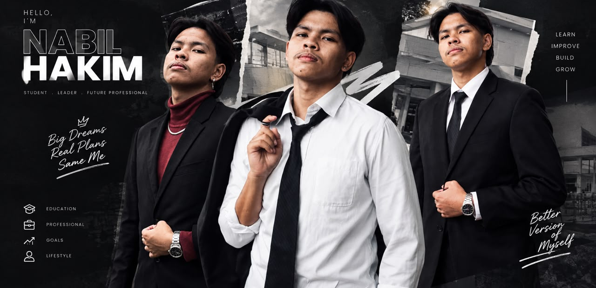
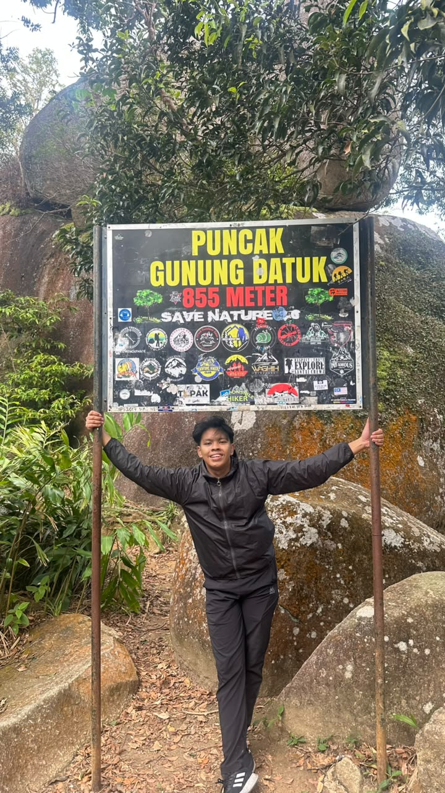
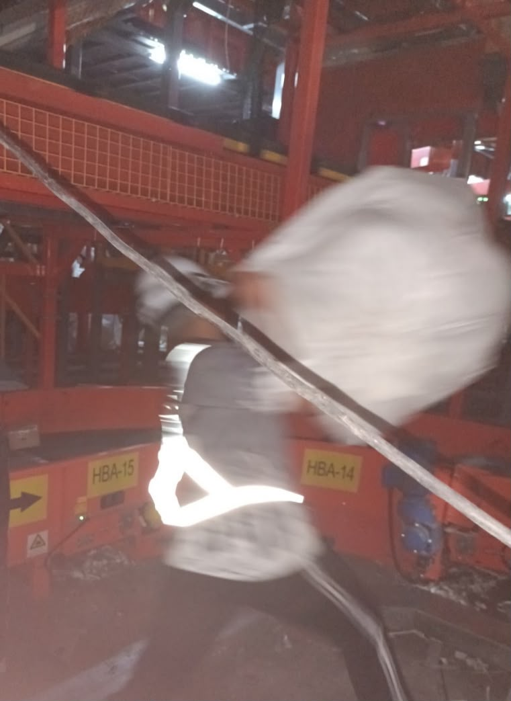
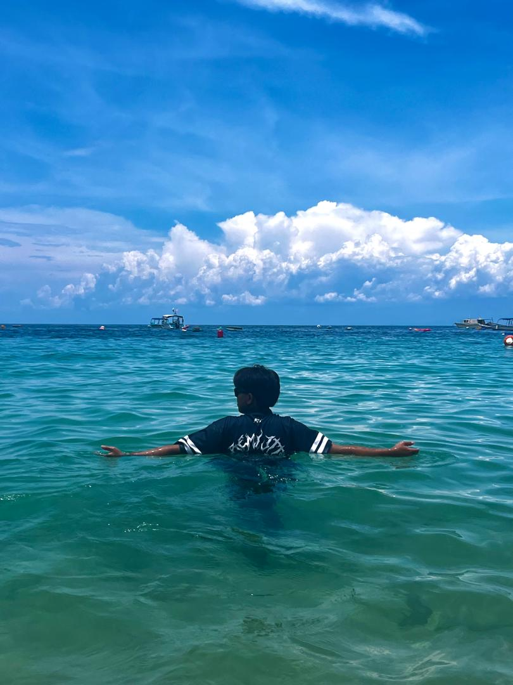
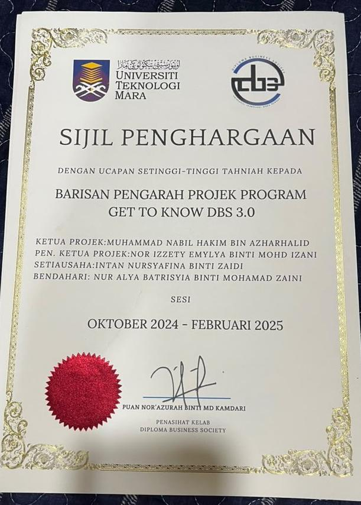
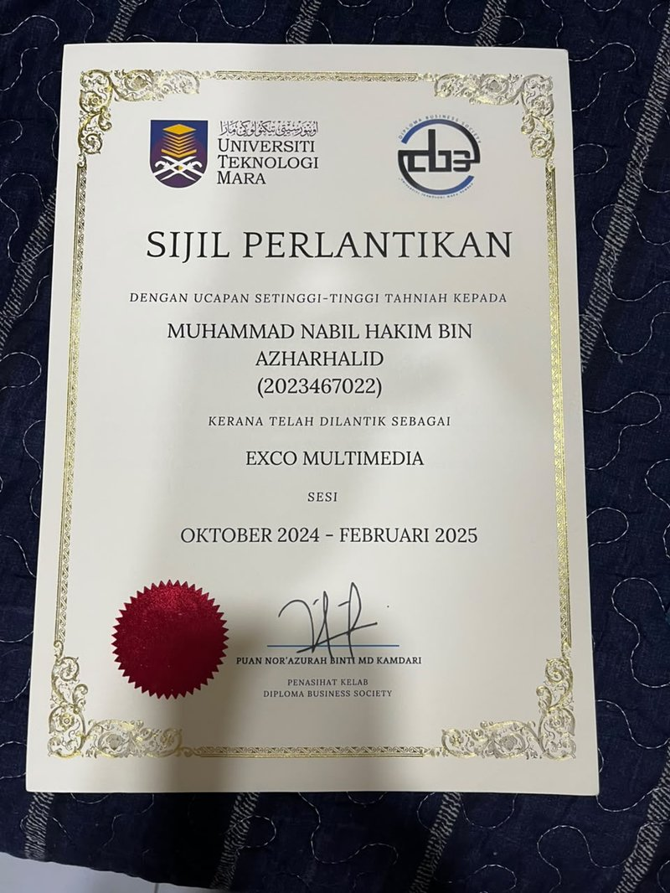
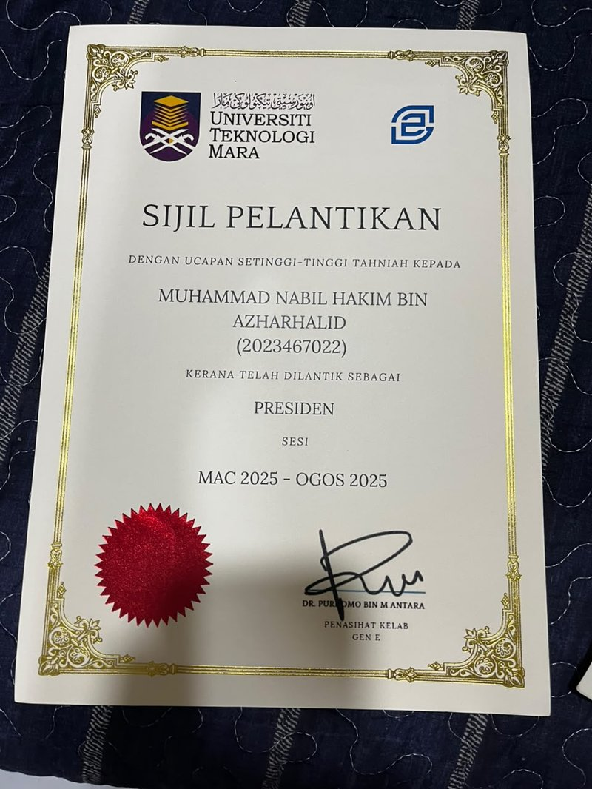
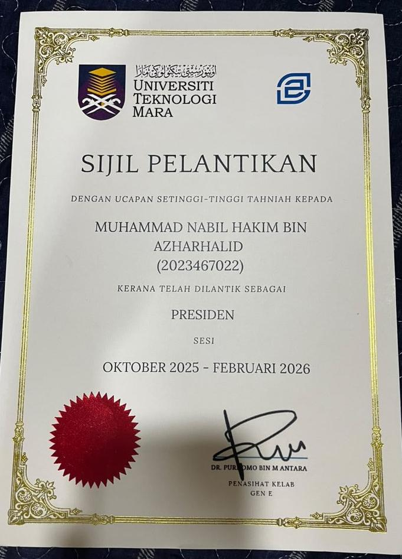
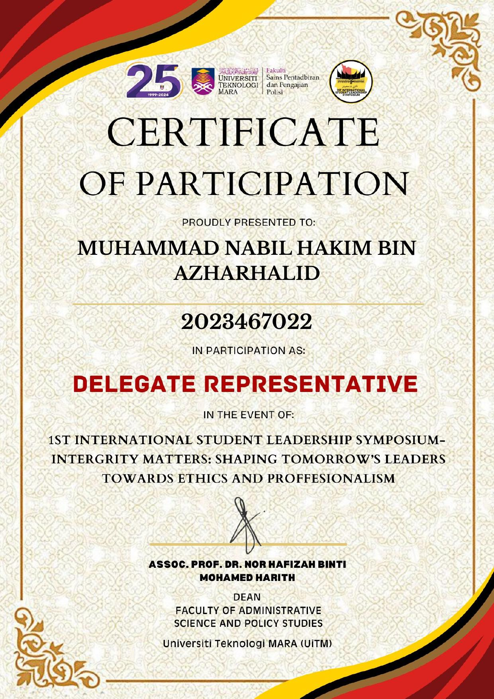

Discipline builds freedom.
Business Studies & Operation Management student at Universiti Teknologi MARA, building his path through student leadership and hands-on operations experience — one deliberate step at a time.
About
I'm Muhammad Nabil Hakim, a Business Studies and Operation Management student at Universiti Teknologi MARA. I care about doing the unglamorous work well — running a club properly, keeping a warehouse floor accurate, showing up prepared — because that's where discipline actually gets built.
My experience spans two very different rooms: leading a student entrepreneurship club through events and partnerships, and leading a department on a live warehouse floor. Both taught me the same lesson from different angles — plans only matter once someone is accountable for running them.
Where I've Studied
Diploma in Business Studies — CGPA 3.84
Bachelor in Operation Management — CGPA 3.87
Sijil Pelajaran Malaysia (SPM)
Where I've Led
Generation Entrepreneur Club, Universiti Teknologi MARA
DDR Sorting Centre, Port Klang
What I Bring
Leading a club and a warehouse department alike — setting direction and keeping people accountable to it.
Organising workshops and business talks end-to-end, from concept to execution.
Comfortable pitching ideas and promoting programs to internal and external audiences.
Practical, numbers-first thinking — built through club budgets and live operational decisions.
Languages English · Malay · Arabic
Portfolio
As President, grew the club's reach through a steady calendar of events, workshops, and business talks — coordinating both the internal team and external partners needed to make each one happen.
Ran daily warehouse operations and staff scheduling at a live sorting centre while keeping inventory audits tight and delivery timelines on track.
Currently pursuing a Bachelor’s Degree in Operations Management, with a Diploma in Business Studies completed at UiTM. Interested in Supply Chain Management, Logistics, and Operations.
Outside the Classroom

Hiking is how I reset. Reaching the peak of Gunung Datuk (855m) was a reminder that the same discipline that gets me through deadlines is what gets you up a mountain — one steady step at a time.

A behind-the-scenes look at my time at DDR Sorting Centre, Port Klang — moving parcels and keeping the line running during my time as Department Leader. Not glamorous, but it's where I learned real operational discipline.

A trip out to the islands, floating out past the boats with nothing but open water and sky ahead. It's my way of disconnecting completely — no deadlines, no schedules, just the sound of the water.
Recognition





Get In Touch
Open to internships, collaborations, and conversations about business, operations, or student leadership. Reach out however's easiest for you.